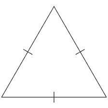
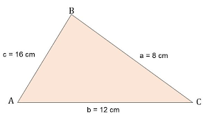
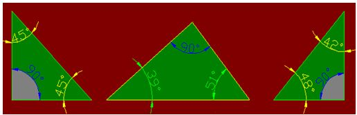
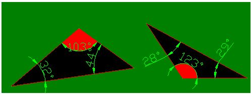

Segmentos y Angulos
Parte Teorica
Lados
Triangulo
Segun sus lados pueden ser:
Equilatero
Es el triangulo que tiene sus tres lados iguales
Isosceles
Es el triangulo que tiene sus dos lados iguales
Escaleno
Es el triangulo que no tiene sus lados iguales
Angulos
Triangulo
Segun sus angulos puede ser:
Acutangulo
Es el triangulo que tiene sus tres angulos agudos(menores de 90°)
Rectangulo
Es el triangulo que tiene un angulo recto(90°)
Obtusangulo
Es el triangulo que tien un angulo obtuso(mas de 90°)